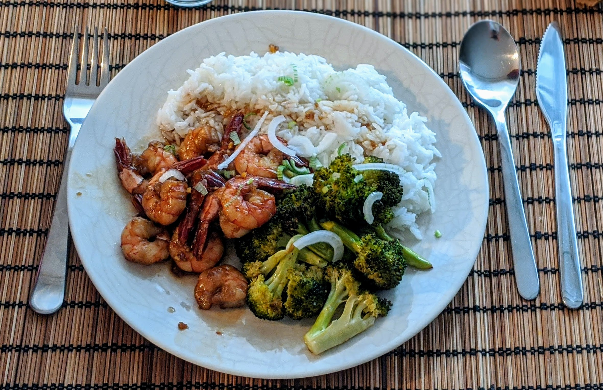

..@..♦.D.

|
Présentation 
|
Blog
|
Recettes
|

Ici avec du riz et des brocolis rôtis.
Pour 2 personnes :
Remarque : on peut laisser la queue des crevettes, c'est généralement plein de goût. Si on veut éviter que les invités n'aient à les équeuter dans l'assiette, enlever les queues une fois égouttées, puis les faire revenir quelques minutes dans pas mal d'huile bien chaude, et se servir de l'huile ainsi aromatisée pour donner un bon goût à du riz ou à du poisson poêlé.